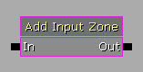
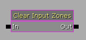
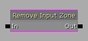
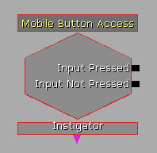
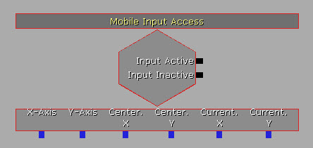
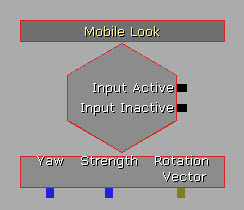
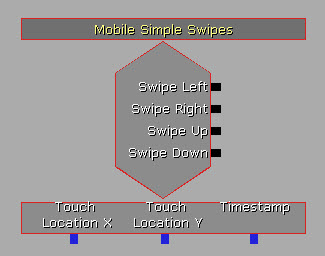
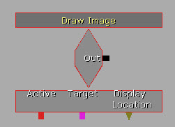
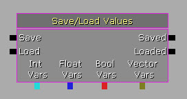

UDN
Search public documentation:
MobileKismetReferenceJP
English Translation
中国翻译
한국어
Interested in the Unreal Engine?
Visit the Unreal Technology site.
Looking for jobs and company info?
Check out the Epic games site.
Questions about support via UDN?
Contact the UDN Staff
中国翻译
한국어
Interested in the Unreal Engine?
Visit the Unreal Technology site.
Looking for jobs and company info?
Check out the Epic games site.
Questions about support via UDN?
Contact the UDN Staff
モバイル Kismet レファレンス
概要
入力
アクション
以下の Kismet アクションは、Kismet 内から入力ゾーンをセットアップするために使用することができます。Add Input Zone

Add Input Zone (入力ゾーンを追加する) アクションは、1 つの入力ゾーンを画面に追加します。 注意 : 特定の入力ゾーンと関連する Kismet 入力イベント (MobileButton 、 MobileInput 、 MobileLook) を接続させる場合は、 Zone Name (ゾーン名) が重要になります。キーバインディングを入力システムに送るためだけに 入力キー を使用するのであれば、名前は重要ではありません。
プロパティ
- Zone Name (ゾーン名) - 新たな入力ゾーンにつける名前を指定します。
- New Zone (新たなゾーン) - 新たな入力ゾーンを作成します。作成には、標準のオブジェクト作成プロパティダイアログを使用します。これによって、Kismet アクションが実行されるときに、新たに作成したゾーンのテンプレートをセットアップできるようになります。入力ゾーンのセットアップに関する詳細については、 モバイル入力システム のページをご覧ください。
Clear Input Zones

Clear Input Zones (入力ゾーンをクリアする) アクションは、INI ファイルからロードされたゾーンおよび Kismet によって作成されたゾーンすべてを画面から削除します。この時点で、新たな入力ゾーンを追加する上記アクションを利用して一から始めなければなりません。Remove Input Zone (入力ゾーンを除去する)

Remove Input Zone (入力ゾーンを除去する) アクションは、名前を指定して特定の入力ゾーンを画面から除去します。 プロパティ- Zone Name (ゾーン名) - 除去する入力ゾーンを指定します。
イベント
以下のイベントは、直接 Kismet の内部で、入力ゾーンからの入力をゲームプレイの動作に変換します。Mobile Button Access

Mobile Button Access (モバイル ボタン アクセス) イベントは、ZoneType_Button タイプを介して Kismet を MobileInputZone に接続します。このイベントの中には、出力がそれに続く場合に 制御するためのオプションがあります。(タッチアップ時、タッチダウン時、常に)。
プロパティ
- SeqEvent_MobileButton
- Send Press Only On Touch Down (タッチダウン時にのみ押下を送信する) - TRUE の場合、押下され始めた時点で Input Pressed (入力が押下された) 出力がアクティベートされます。ボタンが押下されている残りの時間は、 Input Not Pressed (入力が押下されていない) 出力が毎フレーム、アクティベートされます。TRUE ではない場合は、ボタンが押下されている間、毎フレーム Input Pressed 出力がアクティベートされます。
- Send Press Only On Touch Up (タッチアップ時にのみ押下を送信する) - TRUE の場合、ボタンが離された時点で Input Pressed 出力がアクティベートされます。ボタンが押下されている残りの時間は、 Input Not Pressed (入力が押下されていない) 出力が毎フレーム、アクティベートされます。TRUE ではない場合は、ボタンが押下されている間、毎フレーム、 Input Pressed 出力がアクティベートされます。 注意 : このアクションを有効にする場合は、必ず、 Re Trigger Delay (再トリガー遅れ) プロパティを
0.0にセットしてください。そのように設定しない場合は、出力がアクティベートされない場合があります。
- SeqEvent_MobileZoneBase
- Target Zone Name (ターゲット ゾーン名) - このイベントに関連させる入力ゾーンの名前を保持します。 注意 : この名前は既存の入力ゾーンの名前に一致していなければなりません。そうでない場合は、このイベントが機能しません。
- Input Pressed (入力が押下された) - ボタンが押下されているときに毎フレームがアクティベートされます。
- Input Not Pressed (入力が押下されていない) - ボタンが離されたときにアクティベートされます。
- Instigator - タッチ入力の原因である
PlayerControllerを出力します。
Mobile Input Access

Mobile Input Access (モバイル入力アクセス) イベントは、ZoneType_Joystick を介して Kismet を MobileInputZone に接続します。このイベントは、入力を管理するために使用できる変数 (軸 (Axis) の値とタッチの位置) をいくつか表示します。
プロパティ
- SeqEvent_MobileZoneBase
- Target Zone Name (ターゲット ゾーン名) - このイベントに関連させる入力ゾーンの名前を保持します。 注意 : この名前は既存の入力ゾーンの名前に一致していなければなりません。そうでない場合は、このイベントが機能しません。
- Input Active (入力 アクティブ) - ジョイスティックが使用されているときに毎フレームがアクティベートされます。
- Input Not Active (入力 非アクティブ) - ジョイスティックが離されたときに、アクティベートされます。
- X-Axis (X 軸) - 現在の垂直方向軸の値を出力します。この値の範囲は [-1.0, 1.0] です。-1.0 は、ジョイスティックが下方向に最大の値で、1.0 は、上方向に最大の値を意味します。0.0 は、ジョイスティックが垂直方向において中央に位置することを意味します。
- Y-Axis (Y 軸) - 現在の水平方向軸の値を出力します。この値の範囲は [-1.0, 1.0] です。-1.0 は、ジョイスティックが左方向に最大の値で、1.0 は、右方向に最大の値を意味します。0.0 は、ジョイスティックが水平方向において中央に位置することを意味します。
- Center.X (中央 X) - スクリーン座標においてジョイスティックの垂直方向における中心を出力します。(単位はピクセルです)。
- Center.Y (中央 Y) - スクリーン座標においてジョイスティックの水平方向における中心を出力します。(単位はピクセルです)。
- Current.X (現在の X) - スクリーン座標における、ジョイスティックの現在の垂直方向位置を出力します。(単位はピクセル)。
- Current.Y (現在の Y) - スクリーン座標における、ジョイスティックの現在の水平方向位置を出力します。(単位はピクセル)。
Mobile Look

Mobile Look (モバイル ルック) イベントは、ZoneType_Joystick を介して MobileInputZone に接続します。ただし、ポーンに適用できるようにするためヨー値に変換します。これによって、トップダウンスタイルのゲームにおいて、スティックの位置に従って体の向きを変えるポーンを簡単に作成することができるようになります。
プロパティ
- SeqEvent_MobileZoneBase
- Target Zone Name (ターゲット ゾーン名) - イベントと関連づける入力ゾーンの名前を保持します。 注意 : この名前は既存の入力ゾーンの名前に一致していなければなりません。そうでない場合は、このイベントが機能しません。
- Input Active (入力 アクティブ) - ジョイスティックが使用されているときに毎フレームがアクティベートされます。
- Input Not Active (入力 非アクティブ) - ジョイスティックが離されたときに、アクティベートされます。
- Yaw (ヨー) - ジョイスティックが動いている方向を出力します。単位は Unreal Rotator です。範囲は [0, 65536] で、0 は垂直方向に真っすぐ前を向いている状態です。回転角は時計回りに上昇します。
- Strength (強度) - ジョイスティックの中心からタッチの現在位置までの距離を出力します。単位はピクセルです。
- Rotation Vector (回転ベクター) - X および Y 成分がジョイスティックの垂直および水平軸上の値を表すベクターを出力します。値の範囲は両方とも [-1.0, 1.0] です。
Mobile Motion Access
 Mobile Motion Access (モバイル モーション アクセス) イベントは、ゲームが稼働しているデバイスの加速度センサーによって出力される Attitude (向き) および RotationRate (回転速度) 情報にアクセスするためのものです。(ただし、加速度センサーが利用可能な場合)。
Mobile Motion Access (モバイル モーション アクセス) イベントは、ゲームが稼働しているデバイスの加速度センサーによって出力される Attitude (向き) および RotationRate (回転速度) 情報にアクセスするためのものです。(ただし、加速度センサーが利用可能な場合)。
 出力リンク
出力リンク
- Input Active (入力 アクティブ) - 加速度センサー機能が搭載されているデバイス上でゲームが稼働している間、毎フレームアクティベートされます。
- Pitch (ピッチ) - デバイスの現在のピッチを出力します。単位は Unreal Rotator です。上の画像を参照してください。
- Yaw (ヨー) - デバイスの現在のヨーを出力します。単位は Unreal Rotator です。(ただし、利用可能な場合)。上の画像を参照してください。
- Roll (ロール) - デバイスの現在のロールを出力します。単位は Unreal Rotator です。上の画像を参照してください。
- Delta Pitch (デルタ ピッチ) - デバイスにおけるピッチの変化率 (速度) を出力します。単位は 「Unreal Rotator / 秒」です。
- Delta Yaw (デルタ ヨー) - デバイスにおけるヨーの変化率 (速度) を出力します。単位は 「Unreal Rotator / 秒」です。
- Delta Roll (デルタ ロール) - デバイスにおけるロールの変化率 (速度) を出力します。単位は 「Unreal Rotator / 秒」です。
Mobile Object Picker
 Mobile Object Picker (モバイル オブジェクト 選択) イベントは、ワールド内の特定のオブジェクト上でタッチが発生したか否かを知らせます。このイベントは、タッチの X/Y 位置を受け取り、ワールド内でそこからトレースします。このトレースが、Target 変数リンクで指定されたオブジェクトとぶつかった場合は、 Success (成功) 出力リンクをアクティベートさせます。それ以外は、 Fail (失敗) 出力リンクをアクティベートさせます。
Mobile Object Picker (モバイル オブジェクト 選択) イベントは、ワールド内の特定のオブジェクト上でタッチが発生したか否かを知らせます。このイベントは、タッチの X/Y 位置を受け取り、ワールド内でそこからトレースします。このトレースが、Target 変数リンクで指定されたオブジェクトとぶつかった場合は、 Success (成功) 出力リンクをアクティベートさせます。それ以外は、 Fail (失敗) 出力リンクをアクティベートさせます。 FinalTouchLocation (最終タッチ位置)、 FinalTouchNormal (最終タッチ法線)、 FinalTouchObject (最終タッチオブジェクト) プロパティを表示することによって、タッチされたものを管理することができます。
プロパティ
- Mobile
- Trace Distance (トレース距離) - 選択されたものとして登録されるために、オブジェクトがカメラから離れていることができる最大距離を指定します。
- Touch Index (タッチ インデックス) - このイベントが管理することになる
MobilePlayerInput(モバイルプレイヤー入力) のタッチ配列に入れるインデックスを指定します。
- SeqEvent_MobileObjectPicker
- Targets (ターゲット群) - タッチを検証すべきオブジェクトのリストを保持します。
- Success (成功) - ターゲットのオブジェクト上でタッチが発生したときにアクティベートされます。
- Fail (失敗) - ターゲットのオブジェクト上ではないタッチが発生したときにアクティベートされます。
- Target (ターゲット) - タッチを検証すべきオブジェクトを指定します。
Mobile Raw Input Access
 Mobile Raw Input Access (モバイル生の入力アクセス) イベントは、生の入力イベントを管理するために使用されます。UnrealScript で使用可能な、
Mobile Raw Input Access (モバイル生の入力アクセス) イベントは、生の入力イベントを管理するために使用されます。UnrealScript で使用可能な、 MobilePlayerInput クラスに置かれた OnInputTouch() デリゲートに類似しています。
プロパティ
- Mobile
- Touch Index (タッチ インデックス) - このイベントが管理することになる
MobilePlayerInput(モバイルプレイヤー入力) のタッチ配列に入れるインデックスを指定します。
- Touch Index (タッチ インデックス) - このイベントが管理することになる
- Touch Begin (タッチ開始) - タッチが最初に発生したときに (指がスクリーンにタッチしたときに) アクティベートされます。
- Touch Update (タッチ更新) - タッチが行われているあいだ (指がスクリーンにタッチしているあいだ) 毎フレーム、アクティベートされます。
- Touch End (タッチ終了) - タッチが終了したときに (指がスクリーンにタッチするのを止めたときに)、アクティベートされます。
- Touch Cancel (タッチ キャンセル) - タッチが外部の影響によってキャンセルされたときに (システムメッセージが表示されたときに) アクティベートされます。
- Touch Location X (タッチ位置 X) - スクリーン上におけるタッチの垂直方向の位置を出力します。単位はピクセルです。
- Touch Location Y (タッチ位置 Y) - スクリーン上におけるタッチの水平方向の位置を出力します。単位はピクセルです。
- Timestamp (タイムスタンプ) - タッチイベントが発生した時間を出力します。
Mobile Simple Swipes

Mobile Simple Swipes (モバイル シンプル スワイプ) イベントは、基本的なスワイプ (スクリーン上で指を掃くようにしてすべらせる動作) を検知するとともに、スワイプの方向に応じてインパルス (衝撃) を与えます。 プロパティ- Swipe (スワイプ)
- Tolerance (許容誤差) - 当該の軸から外れて (軸から斜めに) タッチが動いても、スワイプとして認識されるために許される最大ピクセル数です。
- Min Distance (最小距離) - スワイプとして認識されるためにタッチが継続して移動しなければならない距離 (最低ピクセル数) です。
- Mobile
- Touch Index (タッチ インデックス) - このイベントが管理することになる
MobilePlayerInput(モバイルプレイヤー入力) のタッチ配列に入れるインデックスを指定します。
- Touch Index (タッチ インデックス) - このイベントが管理することになる
- Swipe Left (スワイプ左) - タッチが左方向のスワイプの場合にアクティベートされます。
- Swipe Right (スワイプ右) - タッチが右方向のスワイプの場合にアクティベートされます。
- Swipe Up (スワイプ上) - タッチが上方向のスワイプの場合にアクティベートされます。
- Swipe Down (スワイプ下) - タッチが下方向のスワイプの場合にアクティベートされます。
- Touch Location X (タッチ位置 X) - スクリーン上におけるタッチの垂直方向の位置を出力します。単位はピクセルです。
- Touch Location Y (タッチ位置 Y) - スクリーン上におけるタッチの水平方向の位置を出力します。単位はピクセルです。
- Timestamp (タイムスタンプ) - タッチイベントが発生した時間を出力します。
HUD
Draw Image

Draw Image(イメージの描画) イベントは、テクスチャ (またはテクスチャの一部) をスクリーン上にオーバーレイ表示します。 プロパティ- HUD
- Display Color (カラー表示) - イメージをモジュレートするために使用するカラーを指定します。
- Display Location (位置表示) - スクリーン上にイメージを描画する相対位置を指定します。これは、X および Y 成分が水平および垂直軸上の位置を表すベクターです。値の範囲は両方とも [0.0, 1.0] です。
- Display Texture (テクスチャ表示) - イメージを描画する際の元となるテクスチャです。
- [X/Y]L - 描画するイメージの水平および垂直方向のサイズです。
- [U/V] - 描画するテクスチャ部分の左上隅の水平および垂直方向位置です。単位はピクセルです。
- [U/V]L - 描画するテクスチャ部分の水平および垂直方向の幅です。単位はピクセルです。
- Is Active (アクティブである) - TRUE の場合、イメージが描画されます。
- Authored Global Scale (オーサリングされるグローバル スケール) - オーサリングされているコンテンツが対象とするディスプレイのスケール係数を指定します。この値を 2.0 にすると、高解像度のスクリーン (iPhone 4 などの) に役立ちます。また、1.0 にすると、標準的な解像度のスクリーン (iPad や旧型の iPhone、iPod Touch などの) に役立ちます。
- Out - この出力はアクティベートされません。
- Active (アクティブ) - イメージが
Is Activeプロパティによって描画されるかどうかをセットします。 - Target (ターゲット) -
- Display Location (位置表示) - スクリーン上に描画されているイメージの位置をセット / 出力します。
Draw Text
 Draw Text (テキスト描画) イベントは、スクリーン上にテキストの文字列をオーバーレイ表示します。
プロパティ
Draw Text (テキスト描画) イベントは、スクリーン上にテキストの文字列をオーバーレイ表示します。
プロパティ
- HUD
- Display Font (フォント表示) -
- Display Color (カラー表示) - イメージをモジュレートするために使用するカラーを指定します。
- Display Location (位置表示) - スクリーン上にイメージを描画する相対位置を指定します。これは、X および Y 成分が水平および垂直軸上の位置を表すベクターです。値の範囲は両方とも [0.0, 1.0] です。
- Display Text (テキスト表示) - スクリーンに描画するテキストの文字列です。
- Text Draw Method (テキスト描画方法) - テキストをスクリーンに描画するときに使用する方法です。
- DRAW_CenterText -
Display Location(描画位置) 上の水平方向中央にテキストを配置します。 - DRAW_WrapText -
Display Location(描画位置) からラップされたテキストを描画します。
- DRAW_CenterText -
- Is Active (アクティブである) - TRUE の場合、イメージが描画されます。
- Authored Global Scale (オーサリングされるグローバル スケール) - オーサリングされているコンテンツが対象とするディスプレイのスケール係数を指定します。この値を 2.0 にすると、高解像度のスクリーン (iPhone 4 などの) に役立ちます。また、1.0 にすると、標準的な解像度のスクリーン (iPad や旧型の iPhone、iPod Touch などの) に役立ちます。
- Out - この出力はアクティベートされません。
- Active (アクティブ) -
Is Activeプロパティを使用してテキストを描画するかどうかをセットします。 - Target (ターゲット) -
- Display Location (描画位置) - スクリーンに描画されているテキストの位置をセットします。
- Display Text (テキスト表示) - スクリーンに描画されるべきテキストの文字列をセットします。
データの保存
Save/Load Values
このアクションは、iOS においてのみ機能します。
Save/Load Values (値の保存 / ロード) アクションは、Kismet の変数に格納されている、int 型、float 型、 bool 型、vector 型の値を保存します。本質的にこのアクションは、データの保存 / ロードのためのコンソールコマンドをラップしたものです。データの保存とロードに関する詳細については、 Unreal Engine 3: モバイル概要 のページをご覧ください。 注意 : 変数を保存およびロードする際は、同一のアクションを使用するよう推奨します (特に、変数が多い場合)。これによって、全く同一の変数を容易に保存 / ロードすることができるようになります。 入力リンク- Save (保存) - リンクされた変数をディスクに保存します。
- Load (ロード) - リンクされた変数をディスクからロードします。
- Saved (保存済み) - リンクされた変数が保存されたときにアクティベートされます。
- Loaded (ロード済み) - リンクされた変数がロードされたときにアクティベートされます。
Var Name プロパティ)。int 型、float 型、 bool 型、vector 型変数を指す Named Variable (名前付き変数) オブジェクトを使用することもできます。
- Int Vars (int 型変数) -
- Float Vars (float 型変数) -
- Bool Vars (bool 型変数) -
- Vector Vars (vector 型変数) -